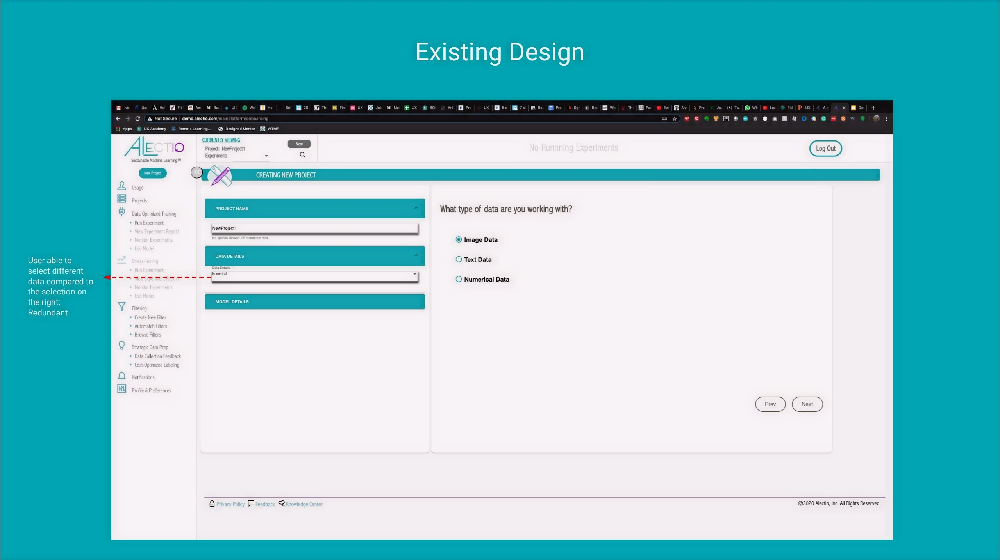
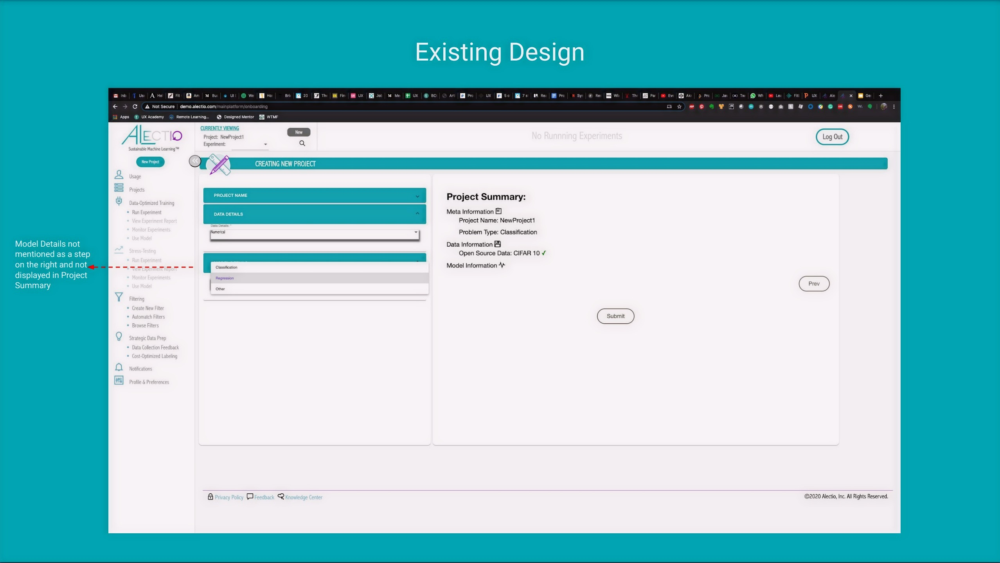
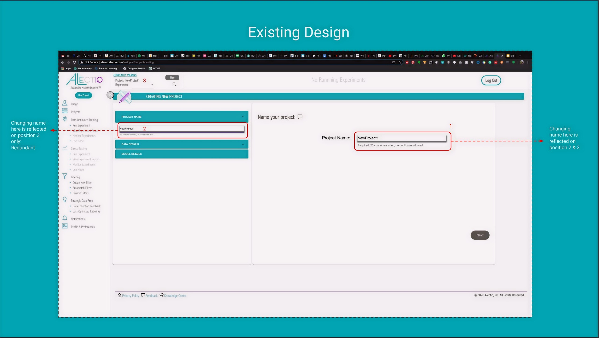
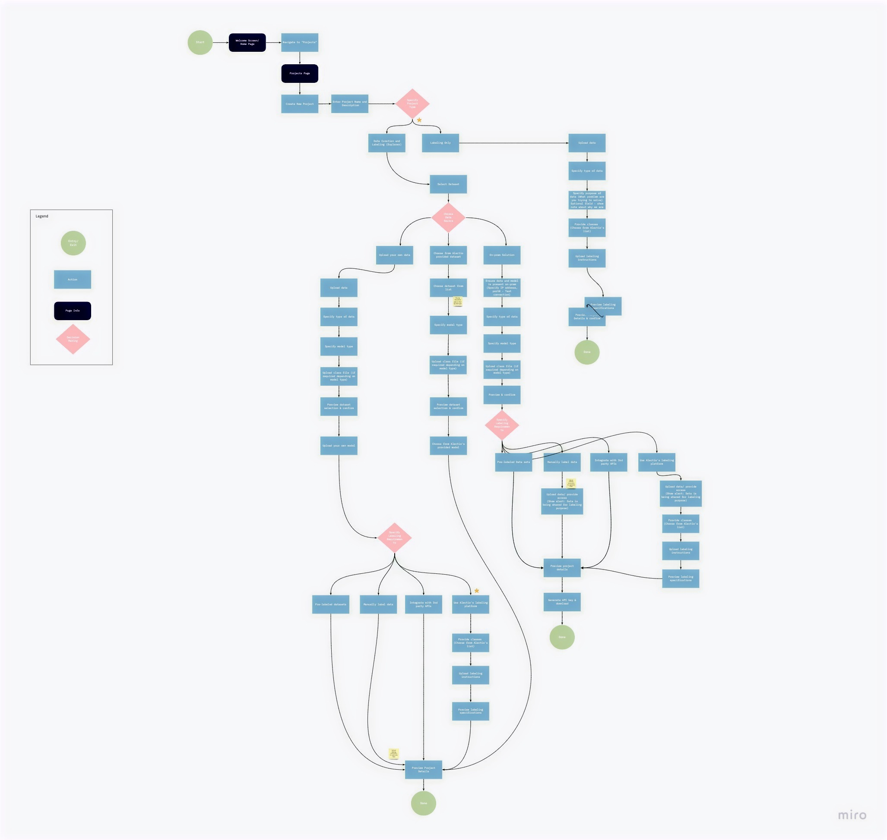
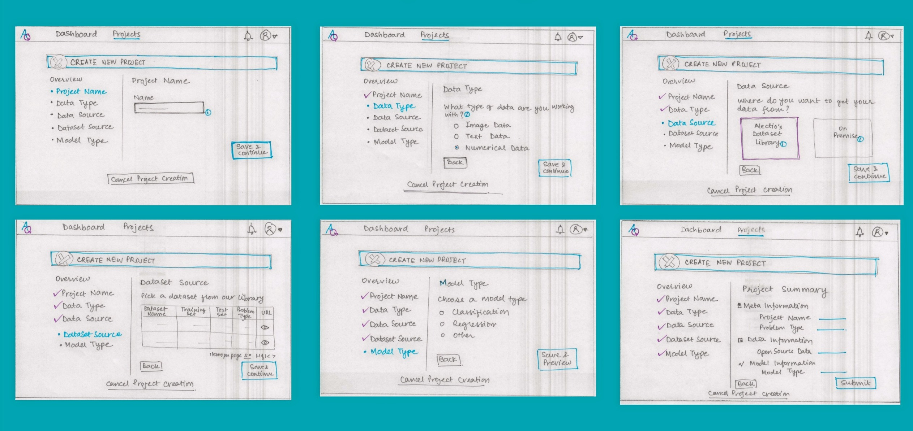
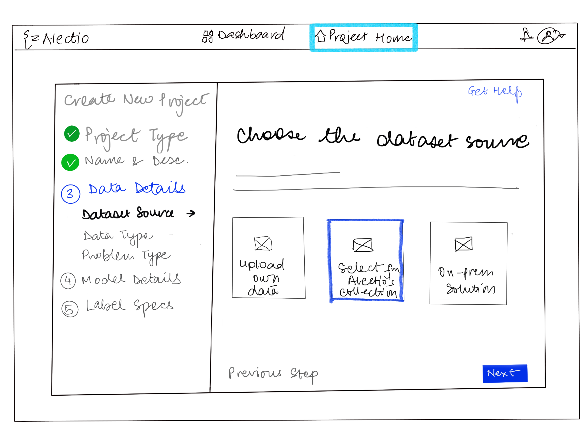
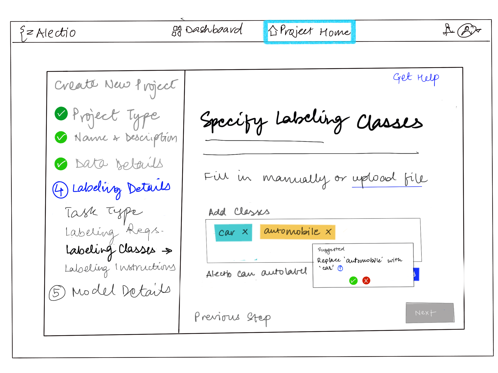

Alectio
Onboarding Redesign
Simplifying project setup for a B2B ML data-prep platform

Understanding where
users got stuck
Alectio's platform was primarily used by ML scientists and engineers on desktop. I conducted user interviews and walkthroughs of the existing onboarding flow to understand what motivated users, where they got stuck, and what slowed down project setup.
Methods: User interviews · Walkthroughs of the existing onboarding flow
I pulled out the repeated blockers across interviews and used them to prioritize which onboarding steps needed the most clarity.
{kind=link}

Redundant data type entry — users could select data in two places, creating confusion about which field was authoritative.
{kind=link}

Model details not reflected in the project summary — users couldn't verify their selections before submitting.
{kind=link}

Two project name fields that updated independently — a confusing inconsistency that eroded trust in the interface.
User Research — Key Insights
These themes highlighted where users lost time or confidence during setup and guided the onboarding changes we prioritized.
Translating research
into direction
I translated research into a clear direction by defining success criteria and prioritizing the highest-impact areas. This helped align the team on what "better onboarding" meant for ML practitioners and what we would change first.
Exploring two
redesign tracks
I explored two redesign tracks — platform layout and project onboarding — by mapping key flows and iterating through low-fidelity concepts with the team. With feedback from engineering and ML stakeholders, sketches and wireframes helped us quickly test structure, reduce cognitive load, clarify next steps, and converge on a guided setup experience.
Platform Layout Exploration
The existing UI relied on a sidebar packed with actions and lacked a clear hierarchy, while the top bar was underutilized. I explored a layout that elevated top navigation and grouped functionality into primary views — Dashboard and Projects — with user controls separated to the top right for faster access.
{kind=link}

Mapping the full onboarding flow revealed where branching paths created confusion — and where a single guided path would reduce cognitive load.
Onboarding Exploration
Creating a project is the entry point to most workflows in Alectio. The existing experience offered multiple starting paths and required too many decisions upfront — which made setup feel slow and error-prone. I used quick hand sketches to map out the proposed step-by-step flow before translating it into digital wireframes.
{kind=link}

Six-step onboarding flow sketched out: Project Name → Data Type → Data Source → Dataset Source → Model Type → Project Summary. Each step surfacing one clear decision.
{kind=link}

Choose dataset source — Alectio's library or on-premise. Clear visual options replace a dropdown buried in a form.
{kind=link}

Specify labeling classes — fill in manually or upload a file. Tooltip helps users understand the impact of their choice.
Shipping the redesign
I shared the refined flow and low-fi wireframes with the product designer for high-fidelity mockups, then supported implementation in Angular alongside the engineering team.
Results
We ran a short dashboard survey before and after the launch, asking users to rate statements on a Strongly Disagree → Strongly Agree scale. Post-launch feedback was mostly positive, with a clear request for stronger value messaging to help users understand the impact of their actions.
What I learned
Alectio was a turning point — moving from primarily front-end execution into a more customer-facing, UX-driven role where I helped shape what we built and why.